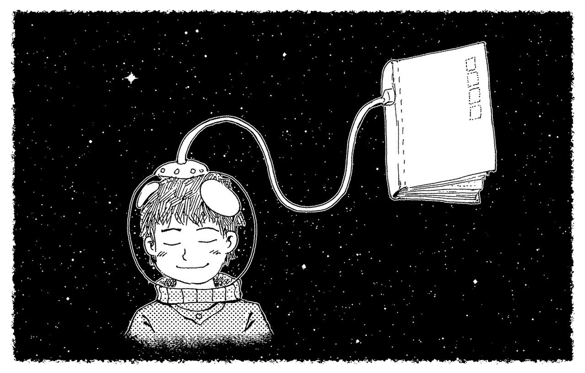

Para conocer toda la información, haga clic en la flecha de la derecha.
Las licencias de derechos de autor Creative Commons son una de las principales herramientas para el desempeño académico y pedagógico en la internet que actualmente y, pese a su aparente complejidad, ofrecen reglas de acceso, uso y adaptación de recursos comprensibles aún sin conocimientos en el ámbito de los derechos de autor. Veamos lo que nos dice la página oficial de Creative Commons.
Definen a las licencias Creative Commons (CC) como un tipo de reglamentación otorgada a contenidos de la internet que permiten un equilibrio entre la protección de los derechos sobre la producción intelectual y la accesibilidad a tales recursos. Según el tipo de licencia CC que se establezca, permite la revisión, distribución, copia y edición de recursos en formato de texto, imagen y audiovisual. Actualmente, existen en versiones 1.0, 2.0, 3.0 y 4.0, y sus diferencias se reducen a modernizaciones de la lógica general de uso orientadas a simplificar el lenguaje, volverlas de un alcance internacional por medio de la traducción a diferentes idiomas, mejorar el respeto a los derechos morales y la oportunidad de corregir violaciones de tales licencias.
Este tipo de licencias aseguran el reconocimiento de los autores de los recursos y la extensión de las mismas. Además, su diferenciación se da a partir de la respuesta a las siguientes preguntas: ¿se permite el uso comercial?, ¿se permiten obras derivadas? De ser así, quien crea una obra derivada ¿debe usar la misma licencia? La respuesta a estas cuestiones de forma simple y en un lenguaje accesible para todos, sin necesidad de ser expertos en leyes, permite el respeto y seguridad en el uso de los recursos de la internet.
De esta forma, las licencias CC se dividen tal y como se muestra a continuación:
Seleccione la pestaña correspondiente para revisar las licencias:
Otras licencias:
A continuación, haga clic en el recuadro correspondiente para leer la información de cada licencia:
Ahora, seleccione la pestaña correspondiente para leer el texto completo:
Buena parte de las revistas académico-científicas, los blogs en internet o los artículos en periódicos en línea, manejan una licencia de tipo CC 4.0 BY-NC-ND, es decir, la más restrictiva de todas, pues sólo permite la visualización y distribución sin obras derivadas ni usos comerciales.
Pese a estas limitaciones, este tipo de recursos es muy importante para la labor pedagógica, pues cumplen con un factor crucial: la accesibilidad gratuita y libre para el docente y el alumno, por lo que, si bien no puede integrarse de forma completa en otro sitio de internet, sí se puede compartir la dirección de tal manera que los alumnos pueden acceder a él. Así mismo, una obra de este tipo puede usarse como base para contenidos propios a partir de legalidades universalmente establecidas, como la citación textual (con un límite de extensión) o parafraseo para su uso académico.
La obligación de referir o dar crédito al autor del recurso de texto es prioritaria, pues además de violación de derechos de autor, podríamos incurrir en plagio. En estos casos, la referenciación de los recursos obedece al formato que se prefiera, por ejemplo, el de la American Psicology Asociation, el estilo Chicago-Deusto, el Harvard, entre otros.
En cuanto a los recursos de video, atendemos a la misma lógica. Por ejemplo, el repositorio más grande de videos públicos y con el catálogo más diverso es Youtube, sitio que, pese a permitir que los creadores de contenido establezcan la licencia CC a sus obras, tiene una forma propia de licencia. Bajo esta forma, los creadores de contenido permiten a la plataforma su uso, redistribución y adaptación, pero para quienes acceden a éstos (los usuarios o consumidores), sólo permiten su reproducción, distribución y uso de base para otras obras según lo permita la función del servicio de Youtube, es decir, no pueden usarlo de forma independiente al servicio de la plataforma como, por ejemplo, descargarlo y subirlo a otra plataforma o presentarlo en otro formato. Así, al igual que en el caso de los textos, puede dirigirse a los alumnos al recurso al integrar el link correspondiente.
Su referenciación, igual que en el caso de las obras de texto señaladas, está sujeto a las normas establecidas por el formato que se use (APA, Chicago, Harvard, etc).
Otro tipo de repositorios, como Mazwai o Flickr son grandes bibliotecas de pequeños cortos de video con múltiples temáticas que suelen ser base para obras posteriores. Este tipo de bibliotecas albergan recursos bajo diferentes categorías de licencia Creative Commons y su norma de citación es la siguiente:
Nombre del video, por autor licencia bajo categoría de licencia CC.
Por ejemplo: Pine Tree Forest 02, por Videvo bajo licencia CC BY 3.0.
En el video ¿Cómo acceder a los repositorios de video e imagen y referenciar adecuadamente los recursos?, incluido al final de esta sección, se muestra el procedimiento necesario para la búsqueda y referenciación de recursos.
Ahora bien, es importante recordar que en cada uno de los componentes de referenciación es necesario incluir el hipervínculo del recurso, es decir, en el nombre del video incorporar el link para acceder al video; en el nombre del autor insertar el link para acceder al perfil de autor; y en la categoría de licencia, el link que direccione al tipo de licencia en el portal de Creative Commons.
En el video ¿Cómo acceder a los repositorios de video e imagen y referenciar adecuadamente los recursos?, incluido al final de esta sección, se muestra el procedimiento necesario para incluir hipervínculos en las palabras.
Otros repositorios como Pixabay, al contener videos gratis y libres de derechos de autor, no requieren estrictamente una referenciación como la anterior, no obstante, recomiendan su referenciación para dar crédito al autor a partir de la misma lógica, facilitando la tarea al ofrecer una etiqueta que sólo debe copiarse e integrarse como fuente del recurso, por ejemplo:
Fuente: Video de dae jeung kim de Pixabay.
Otros, como TedTalks, implican recursos más elaborados y orientados a temáticas particulares. Éstos se presentan como disertaciones de expertos, usualmente en idioma inglés, pero contando con subtítulos. Estos recursos de video son muy útiles para el uso pedagógico, pues tienen licencia CC 4.0 BY-NC-ND, es decir, sólo permiten la visualización y distribución sin obras derivadas ni usos comerciales, y únicamente a partir de la misma plataforma, no autorizando la descarga del video.
De esta forma, su referenciación es igual a la señalada en el caso de Mazwai o Flickr, salvo que, en este caso, no requerirá el hipervínculo del blog del autor (al no existir blog personal dentro de la plataforma):
Por ejemplo: Earth´s mysterious red glow, explained, por Videvo bajo licencia CC BY-NC-ND 4.0
En el video ¿Cómo acceder a los repositorios de video e imagen y referenciar adecuadamente los recursos?, incluido al final de esta sección, se muestra el procedimiento necesario para la búsqueda y referenciación de recursos.
Por último, los recursos en formato imagen, bajo las diferentes categorías de Creative Commons, encontrados en repositorios como Wikicommons o Flickr, requieren de su referenciación bajo la misma lógica que en el caso de los videos de Mazwai y Flickr:
Nombre del video, por autor bajo licencia categoría de licencia CC.
Por otro lado, repositorios como Pixabay o Freepik, al contener imágenes y vectores sin derechos de autor, no requieren estrictamente una referenciación como la anterior, pero la recomiendan para dar crédito al autor a partir de la misma lógica, facilitando la tarea al ofrecer una etiqueta que sólo debe copiarse e integrarse como fuente de la imagen. Para mayor información, puede volver a visualizar el video anterior sobre cómo acceder a los repositorios.
|

|
|
| Fuente: Pixabay: Imagen de 愚木混株 Cdd20 en Pixabay. | Fuente: Freepick para uso web: Vector de Árbol creado por macrovector - www.freepik.es Fuente: Freepick para versión impresa: Fuente de la imagen Freepick.com |
En el siguiente video podrá revisar, con mayor detalle, los temas hasta aquí abordados, es decir, sobre cómo referenciar adecuadamente los recursos y acerca de cómo acceder a los repositorios de imagen y video.
Ahora, revise la siguiente tabla, misma que muestra la referenciación de recursos de internet de acuerdo con cada uno de los formatos ya descritos.
Para conocer más acerca del tema anterior, consulte los siguientes documentos:
García, J. F. (2019). Derechos de autor en Internet. Universidad Nacional Autónoma de México. https://www.posgrado.unam.mx/publicaciones/ant_col-posg/45_Internet.pdf
Guerra, J. T. (2019). Uso de licencias Creative Commons en las revistas académicas editadas por las instituciones de educación superior públicas en Iberoamérica [Tesis de doctorado]. Universidad Complutense de Madrid. https://eprints.ucm.es/id/eprint/56728/1/T41306.pdf
Videvo (s.f.). Pine Tree Forest 02. [Video]. Mazwai. https://mazwai.com/video/pine-tree-forest-02/455217
Batt, S. (2020, 1 de agosto). 12 of the best sites to search for creative commons images. Maketeacheasier. Blog. https://www.maketecheasier.com/7-places-to-find-creative-commons-images-online/
Creative Commons (s.f). Sobre las licencias. Creative Commons. Blog. https://creativecommons.org/licenses/?lang=es
Universidad Veracruzana (s.f). Recursos de información en acceso abierto [entrada de página web] Universidad Veracruzana. https://www.uv.mx/bvirtual/recursos-acceso-abierto/
{kind=link}
{kind=link}
{kind=link}
{kind=link}
{kind=link}
{kind=link}